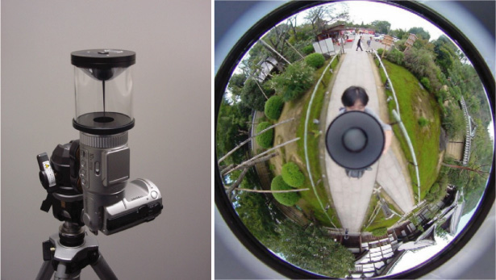
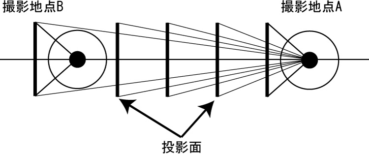
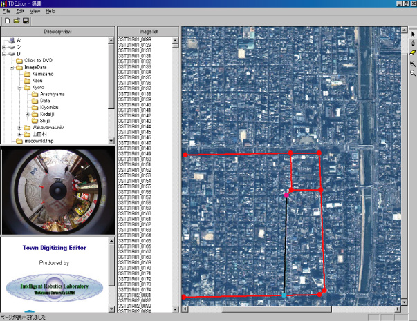
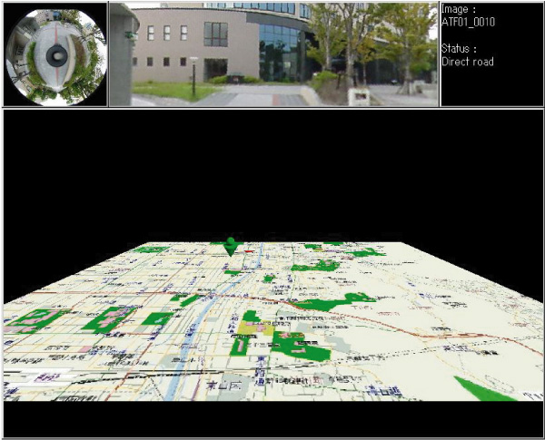
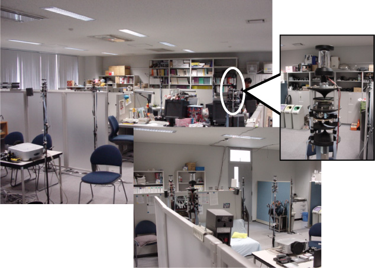
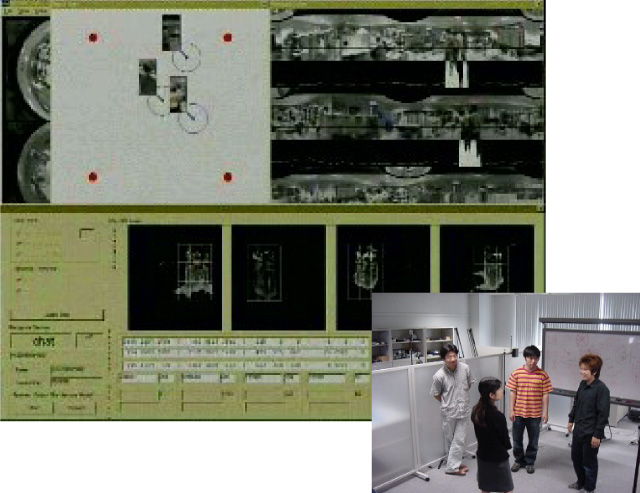
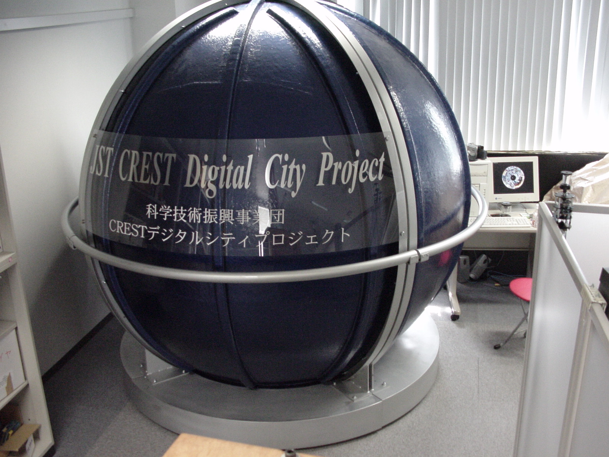
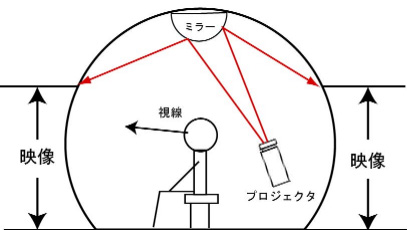

1. Town Digitizing
How can we build high quality 3-D models of a town within a couple of days? Our proposal, Town Digitizing, solves this problem and provides a new method for building photo-realistic virtual worlds. Previous modeling methods based on 3-D geometrical models are good for building a virtual world of a modern city that has many buildings. These methods, however, need much effort since the geometrical parameters of the environment must be measured and have great difficulty in modeling natural objects like trees. All tha tis needed with Town Digitizing is to just take images at regular intervals by an omnidirectional camera.

Fig. 1. Omnidirectional camera and omnidirectional image Fig. 2. Zooming stereo
To build a walk-through virtual world, Town Digitizing smoothly interpolates between omnidirectional images. A simple idea, which does not incur computational costs, is to estimate changes in visual appearance along a line that connect two arbitrary omnidirectional images. Fig. 2 shows the interpolation process, which we call Zooming stereo. For interpolating between two omnidirectional images, some parameters are needed. To estimate the parameters, we use a constrained condition using FOE (Focus Of Expansion).

Fig. 3. TDEditor Fig. 4. TDViewer
Based on Town Digitizing, we have developed two software packages: TDEditor and TDViewer, shown in Fig. 3 and 4, respectively. TDEditor (Town Digitizing Editor) software can automatically compute the parameters for pairs of omnidirectional images by registering the route and omnidirectional images on a map. TDViewer (Town Digitizing Viewer) software provides a walk-through virtual world that constructed around omnidirectional images.
2. Distributed omnidirectional vision system
The Distributed Omnidirectional Vision System (DOVS) uses multiple omnidirectional cameras, as shown in Fig. 5. DOVS can observe a large area with just a few omnidirectional cameras. Since the omnidirectional camera has no view restriction, the redundant observations provided by the DOV cameras yield improvements in localization and identification of the cameras and targets. Using DOVS, we have already developed a real-time human tracking system that can robustly track humans. Based on the human tracking system, we created an expanded system capable of handling many cameras connected to the network. Moreover, by using View And Motion-Based Aspect Model (VAMBAM), which is an omnidirectional view-based aspect model based on motion-based segmentation, we realized location-free and rotation-free gesture recognition with DOVS. Fig. 6 shows a system window for recognizing gestures for human interaction, such as those seen during a chat or a greeting.

Fig. 5. Distributed Omnidirectional Vision System Fig. 6. Gesture Recognition System
The goal of this research is to develop intelligent systems based on a new concept called environmental intelligence. The system, consisting of agents embedded in the environment, supports human activities through interaction. As a first step, we have developed a DOVS to recognize human activities by using models of human activities. We developed a new calibration-free behavior recognition system for DOVS. The basic idea is to directly map the data from cameras to classes for behavior recognition.
3. Personal Omnidirectional Visualizer
Personal Omnidirectional Visualizer, which is an omnidirectional display developed by us, provides a personal virtual space. This display consists of a projector, a spheroidal screen made from FRP, a reflecting mirror, and a personal computer. Compared with conventional immersive displays, this display has lower cost and space requirements. Images or video streams from the projector placed behind the user are reflected on the ceiling and projected on the spheroidal screen surrounding the user. To project undistorted images, this system uses the ray tracing technique in advance to prepare the positional relation between the omnidirectional image and the spheroidal screen.

Fig. 7. Personal Omnidirectional Visualizer Fig. 8. Layout sketch of POV
Publications:
Takushi Sogo and Hiroshi Ishiguro and Mohan M. Trivedi. Real-Time Target Localization and Tracking by N-ocular Stereo. IEEE Workshop on Omnidirectional Vision, pp.153-160, 2000.
Satoshi Koizumi and Hiroshi Ishiguro. Town Digitizing: Omnidirectional Image-Based Virtual Space. International Workshop on Digital Cities, Part 1, pp.19-30, 2003.
Karl MacDorman, Hiroshi Nobuta, Tetsushi Ikeda, Satoshi Koizumi and Hiroshi Ishiguro. A Memory-Based Distributed Vision System that Employs a Form of Attention to Recognize Group Activity at a Subway Station. IEEE/RSJ Conference on Intelligent Robots and Systems, 2004.
Contact:
Hiroshi Ishiguro, Graduate School of Engineering, Osaka University
ishiguro at ams.eng.osaka-u.ac.jp
Satoshi Koizumi, Digital City Research Center, Japan Science and Technology Agency
satoshi at digitalcity.jst.go.jp